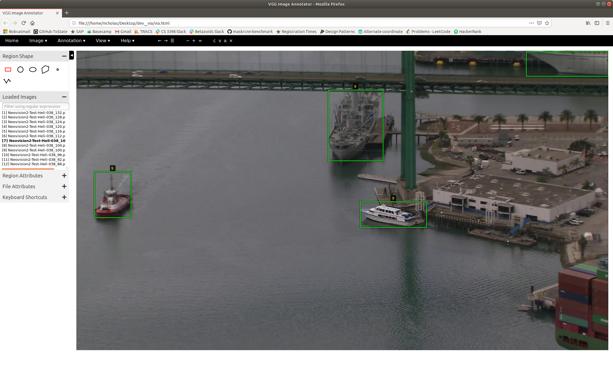
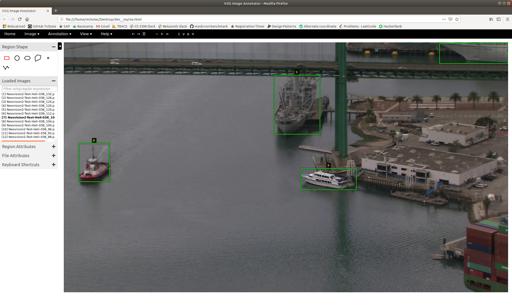
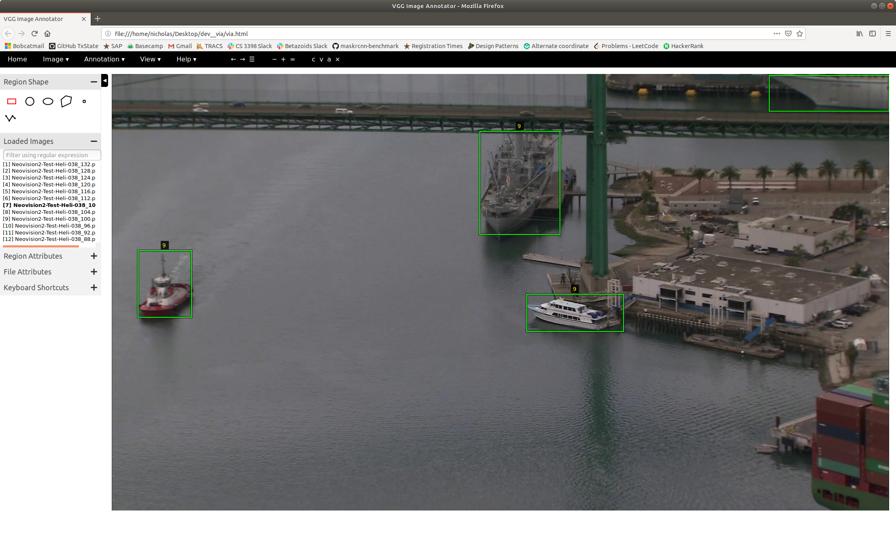

Object Localization and Identification in Maritime Domain
Identifying Maritime Vessels at Multiple Levels of Descriptions using Deep Features
When
Artificial Intelligence and Machine Learning for Multi-Domain Operations Applications, SPIE vol. 11006, Apr 2019, Baltimore, MD.
Who
David Bo Heyse, Nicholas Warren, and Jelena Tešić
Abstract :Varying resolution quality of operational data, size of targets, view occlusions, and large variation in sensors due to nature of overhead systems as compared to consumer devices contribute to degradation of the maritime vessel identification. We exploit the maritime domain characteristics to optimize and refine the deep learning Mask-RCNN framework for training generic maritime vessel classes. Maritime domain, compared to consumer domain, lack alternative targets that would be incorrectly associated as maritime vehicles: this allows us to relax the parameter constraints learned on urban natural scenes in consumer photos, adjust parameters of the model inference, and achieve robust performance and high AP measure for transfer learning scenarios. In this paper, we build upon this robust localization work, and extend our transfer learning work to new domains and datasets. We propose new approach for identifying specific category of maritime vessels and build a refined multi-label classifier that is based on deep Mask-RCNN features. The classifier is designed to be robust to domain transfer (e.g. different overhead maritime video feed), and to the noise in the data annotation (e.g. vessel is not correctly marked or label is ambiguous). We demonstrate superior category classification results of this low shot learning approach on publicly available MarDCT dataset.

Transfer learning of deep neural networks for visual collaborative maritime asset identification
When
2018 IEEE 4th International Conference on Collaboration and Internet Computing (CIC), Pages 246-255, Oct 2018 Philadelphia, PA.
Who
Nicholas Warren, Benjamin Garrard, Elliot Staudt, and Jelena Tešić
Abstract : Recent advances in deep learning for visual recognition demonstrate high performing pipeline for building and deploying well-performing content models. These advances come with underlying assumptions of the data characteristics pertaining to consumer image and video and availability of the large set of annotated data. In this paper we show how to apply lessons learned in the consumer domain to overhead maritime video corpora. We present how to successfully tune deep learning network to overhead maritime domain and tune parameters to new domain characteristics to achieve high performance metric with smaller set of domain annotations. This approach improves the state-of-the-art metric by 80% on maritime IPATCH data. Next, we present challenges and propose several approaches on user collaboration for maritime asset identification, and introduce the notion of persistent and intermittent models.
Give us your data!
Now more than ever, we are looking to test our algorithm on various real world data.
 
